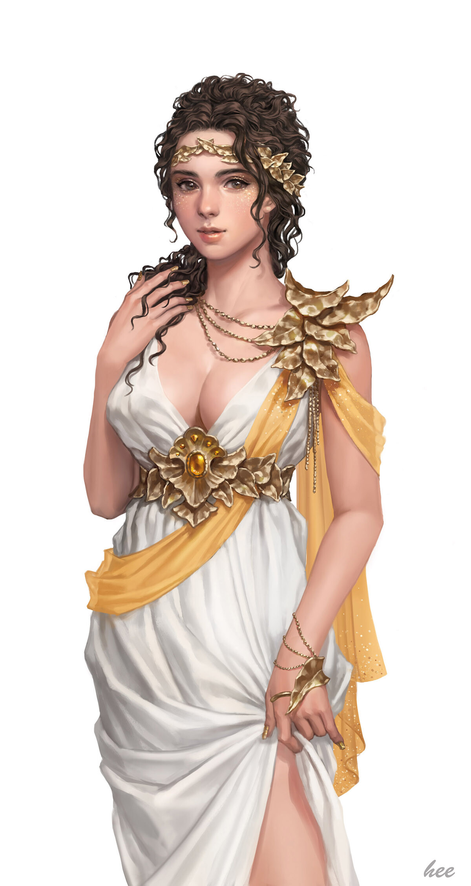
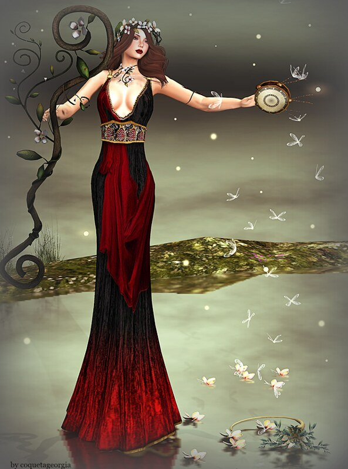
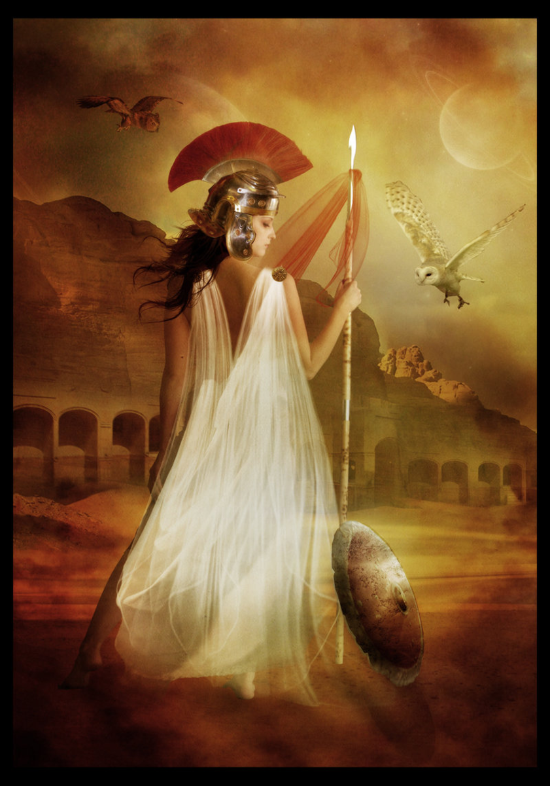
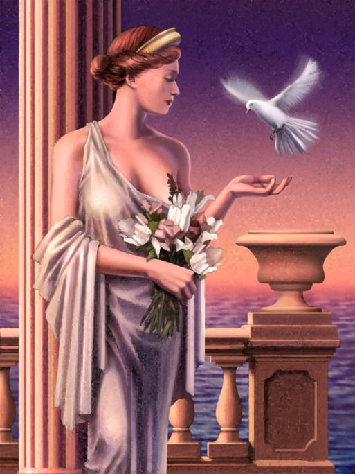
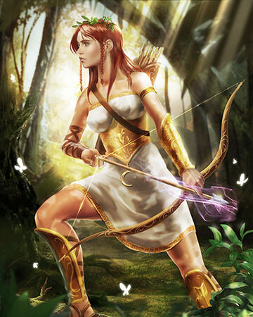

|
 Hera Daughter of Kronus and Rhea. Hera rules over Mount Olympus as queen of the gods She is the wife of her brother Zeus and goddess of women, marriage, family and childbirth. Hera is commonly seen with the animals she considers sacred, including the cow, lion and the peacock. Portrayed as majestic and solemn, often enthroned, and crowned with the polos She is often cheated on by Zeus and more often than not exacts revenge on the woman. Often portrayed as majestic and solemn, often enthroned, and crowned with the polos a high cylindrical crown worn by several of the Great Goddesses. |
 Demeter Daughter of Kronus and Rhea is the Olympian goddess of the harvest and agriculture, presiding over grains and the fertility of the earth. Demeter was frequently associated with images of the harvest, including flowers, fruit, and grain. She was also sometimes pictured with her daughter Persephone annd he snake and the pig were sacred to her. Demeter ruled over the Agriculture, the Harvest, the Growth and the Cycle of the Seasons. |
|
 Athena Daughter of Zeus and Metis, and came out of Zeus skull. Zeus swallowed Metis, the goddess of counsel, while she was pregnant with Athena, It had been prophesied that Metis would bear extremely powerful children: the first, Athena and the second, a son more powerful than Zeus himself, who would eventually overthrow Zeus. In order to forestall these dire consequences, Zeus tricked her into turning herself into a fly and promptly swallowed her. After swallowing Metis, Zeus took six more wives in succession until he married his seventh and present wife, Hera. Then Zeus experienced an enormous headache. He was in such pain that he ordered Hephaestus, to cleave his head open with the labrys, the double-headed Minoan axe. Athena leaped from Zeus's head, fully grown and armed. |
 Aphrodite Aphrodite was born off the coast of Cythera from the foam produced by Uranus's genitals, which his son Kronus has severed and thrown into the sea. Aphrodite is associated with love, beauty, pleasure, passion and procreation.She is represented by symbols such as myrtles, roses, doves, sparrows, and swans. Aphrodite was married to Hephaestus, the god of fire, blacksmiths and metalworking and was frequently unfaithful to him and had many lovers, including Ares. She is depicted as the most beautiful of the Gods' and Godesses' and is often drawn nude. |
|
 Artemis Daguhter of Zeus and Leto twin sister of Apollo. She was the patron and protector of young girls, and was believed to bring disease upon women and relieve them of it. Artemis' symbols included a bow and arrow, a quiver and hunting knives and the deer and the cypress were sacred to her. Artemis preferred to remain a maiden and is sworn never to marry. Much like Athena and Hestia Most stories depict Artemis as firstborn, becoming her mother's midwife upon the birth of her brother Apollo. |